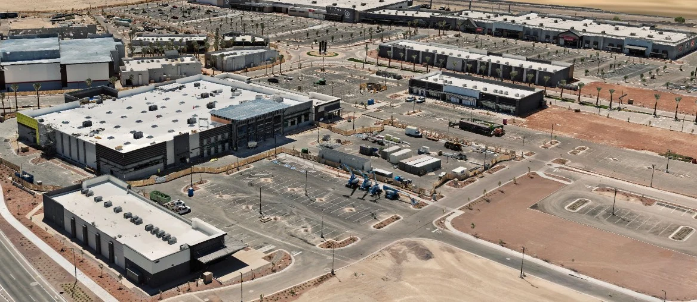
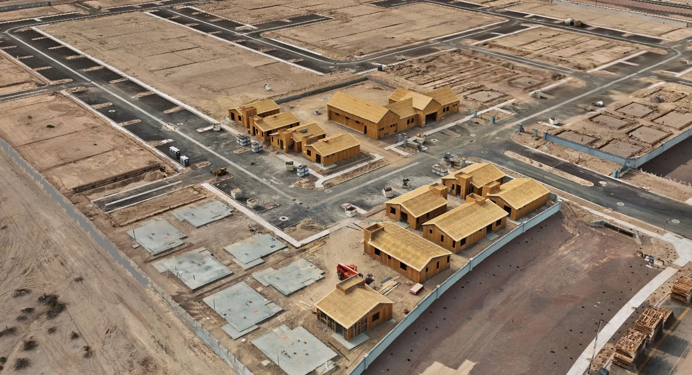

Project · Buckeye, Maricopa County, Arizona
A commercial build documented while it was still moving.
Controlled aerial capture of an active retail development, delivered as a georeferenced 3D record of the site as it stood that day.
What we were documenting
Verrado Marketplace is a commercial retail development under construction in Buckeye, a few miles from our door. A site in active construction changes weekly, and once concrete is poured the conditions underneath it are gone unless somebody recorded them.
What the project required
Decisions on a build like this get made off imagery and defended years later. That puts the bar past a set of photographs: the record has to be positioned independently so a dimension taken from it holds up, and it has to state plainly what it is.
How Axis Fields approached it
Controlled aerial capture combined with GNSS-positioned field observations, producing a georeferenced record of the site. Positioning was established independently rather than relying on the aircraft’s own estimate, and the reconstruction went through independent quality-control checks before delivery.
What was produced
- Orthomosaic imagery at a stated ground sample distance
- Point cloud and textured 3D site model
- Elevation and terrain models
- GIS-ready deliverables in the formats the client’s systems already read
- A written record of correction state, reference frame and what was not captured
How the information can be used
As a dated baseline for later progress visits, for earthwork volumes, for coordination between trades, and as a record of conditions that stop being visible as the build advances.
A geospatial mapping product. Not a substitute for work requiring a licensed professional.

Recurring work
One visit is a record. A schedule is a timeline.
Most construction clients move to a set cadence. Same angles, same coverage, one visit to the next, so each delivery can be compared against the last. Volumes between visits come out of the models rather than off an estimate.

Related
Where this fits.
Building something right now?
A short call settles the scope, the access and the airspace. No obligation.